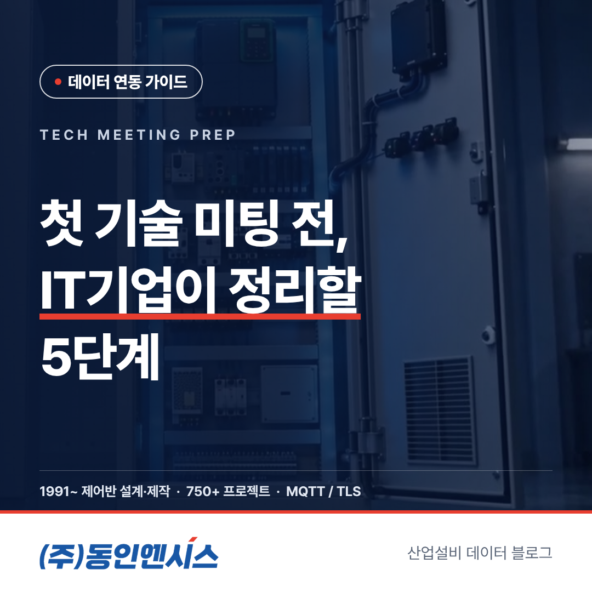
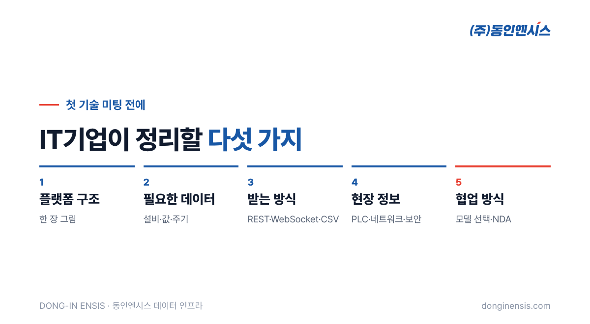
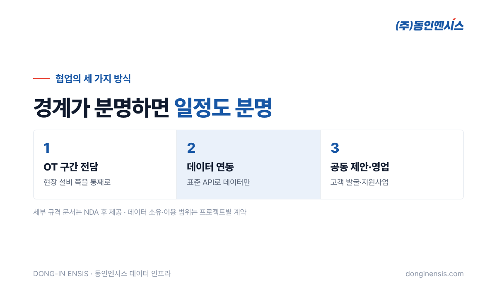

MES, AI 분석, 디지털트윈 플랫폼을 가진 IT기업이 제조 현장 프로젝트를 맡으면, 어느 순간 현장 설비 쪽 파트너가 필요해집니다. 그래서 제어반 회사와 첫 기술 미팅을 잡게 되는데, 막상 만나 보면 서로 무엇을 물어야 할지 몰라 한 시간이 금방 지나가는 경우가 많습니다. 부산에서 30년 넘게 제어반을 설계·제작하며, 이제는 그 제어반에서 나온 설비 데이터를 IT기업 플랫폼에 잇는 일을 하는 동인엔시스가, 첫 기술 미팅 준비를 다섯 단계로 정리했습니다. 이 다섯 가지를 미리 정리해 오시면 첫 만남에서 바로 구체적인 이야기로 들어갈 수 있습니다.
첫 기술 미팅이 헛도는 데에는 대개 비슷한 이유가 있습니다. IT기업은 "데이터를 받을 수 있나요?"라고 묻고, 제어반 회사는 "어떤 설비의 어떤 데이터를요?"라고 되묻습니다. 그 답이 정리되어 있지 않으면 대화는 일반론에 머물고, 다음 미팅을 다시 잡아야 합니다.
동인엔시스와 IT기업이 함께 일하게 되는 길은 대개 네 걸음입니다. 문의를 주고받고, 기술적으로 만나고, 시연 장비로 시험해 보고, 마지막으로 실제 프로젝트를 함께 꾸립니다. 이 가운데 기술 미팅은 서로의 경계를 확인하고 다음 단계로 넘어갈지 정하는 자리입니다. 기술 미팅 준비가 잘 되어 있을수록 시연·테스트로 빨리 넘어갈 수 있습니다. 반대로 준비 없이 만나면 첫 미팅이 '서로 알아 가는 자리'에 그치고, 실제 기술 이야기는 두 번째 미팅으로 미뤄지기 쉽습니다.

가장 먼저 귀사 플랫폼이 데이터를 어디서 받아 어디로 보내는지 한 장의 그림으로 정리해 주세요. 거창한 설계도가 아니어도 괜찮습니다.
이 그림이 있으면 제어반 쪽에서 어디까지 맡고 어디서 넘겨줄지, 즉 경계선이 금방 보입니다. 협업이 어긋나는 대부분의 원인은 이 경계가 흐릿한 데서 시작합니다. 경계가 분명하면 일정과 책임도 함께 분명해지고, 문제가 생겼을 때 어느 쪽을 먼저 봐야 할지도 바로 정해집니다.
"설비 데이터 전부요"보다 "이 설비의 이 값, 이 주기"가 훨씬 빠른 답을 얻습니다.
| 적어 올 항목 | 예시 |
|---|---|
| 대상 설비 | 펌프 4대, 송풍기 2대 |
| 필요한 값 | 운전 상태, 전류, 베어링 온도, 진동 |
| 필요한 주기 | 실시간 화면용, 하루 단위 분석용 |
| 보관 기간 | 분석에 필요한 과거 기간 |
동인엔시스 지능형 제어반은 모터 온도와 진동, 회전속도, 전기 쪽 값, 주변 온습도, 운전 상태를 모을 수 있습니다. 귀사 분석에 꼭 필요한 값이 무엇인지 미리 추려 오시면, 그 값을 어떻게 얻을 수 있을지 첫 미팅에서 바로 답할 수 있습니다.
데이터를 어떤 방식으로 받고 싶은지도 정리해 주세요. 동인엔시스는 데이터를 세 가지 방식으로 제공합니다.
처음에는 CSV로 데이터 모양을 먼저 확인하고, 이후 API로 넘어가는 순서도 많이 씁니다. 받는 쪽의 형식은 설비가 달라도 같은 틀을 유지하므로, 설비가 늘어날 때마다 연동 코드를 새로 짤 필요가 없습니다.
Photorealistic photo of three Korean software engineers in casual clothes in a modern startup office, one drawing a simple block diagram with arrows between boxes labeled only with icons (no readable text) on a whiteboard, laptops on a table, natural daylight, documentary style, no brand logos, no readable text. 3:2 landscape.
이미 함께하는 제조 고객이 있다면, 그 현장에 대해 아는 만큼 정보를 모아 와 주세요.
기존 설비에서 데이터를 읽어 와야 한다면 Modbus TCP/RTU나 OPC UA 같은 통신 방식이 쓰일 수 있고, 새로 설치하는 설비라면 처음부터 지능형 제어반으로 구성해 별도 수집 장비 없이 MQTT/TLS로 보내는 방법도 있습니다. 모르는 항목은 비워 두셔도 됩니다. 현장 확인 단계에서 함께 채울 수 있습니다. 다만 보안 정책처럼 프로젝트 방향을 크게 바꾸는 항목은 미리 확인해 두시면 기술 미팅 준비가 한결 단단해집니다.
마지막으로, 어떤 방식의 협업을 원하는지 생각해 두시면 좋습니다. 동인엔시스가 IT기업과 일하는 방식은 크게 세 가지입니다.
세부 연동 문서가 필요하다면 NDA도 미리 내부에서 검토해 주세요. MQTT 토픽 구조와 메시지 형식, 표준 태그 규칙처럼 구체적인 규격 문서는 비밀유지계약을 맺은 뒤 드립니다. 데이터의 소유와 이용 범위, 보관 기간은 실제 프로젝트에 들어갈 때 계약으로 정합니다.

기술 미팅에서 경계와 방식이 정리되면 시연·테스트로 넘어갑니다. 테스트용 장비가 내보내는 데이터를 귀사 시스템에 직접 연결해 보고, 형식과 주기가 기대대로 들어오는지 함께 확인하는 단계입니다. 여기서 이상이 없으면 실제 고객 현장을 대상으로 한 공동 프로젝트를 준비합니다. 첫 미팅 준비가 잘 되어 있을수록 이 과정이 짧아집니다.
Photorealistic photo of a meeting room in Korea: two people in business casual from a tech company and two engineers in navy work jackets sitting across a table with laptops, a printed diagram and a small light-grey demo control box on the table, friendly conversation, natural light, documentary style, no brand logos, no readable text. 3:2 landscape.
Q. 기술 미팅 준비를 다 못 해도 만날 수 있나요? 물론 가능합니다. 1단계 플랫폼 구조와 2단계 필요한 데이터만 대략 정리해 오셔도 충분히 의미 있는 미팅이 됩니다.
Q. 첫 미팅부터 NDA가 필요한가요? 일반적인 구조와 방식은 NDA 없이도 이야기할 수 있습니다. 세부 규격 문서가 필요해지는 시점에 NDA를 맺습니다.
Q. 고객 현장이 아직 정해지지 않았어도 되나요? 괜찮습니다. 시연 장비로 먼저 연동을 확인해 두고, 고객 현장이 정해지면 그때 현장 조건을 반영할 수 있습니다.
첫 기술 미팅의 성과는 얼마나 좋은 질문을 들고 오느냐에 달려 있습니다. 플랫폼 구조, 필요한 데이터, 받는 방식, 현장 정보, 협업 방식. 이 다섯 가지를 정리해 오시면 첫 만남이 곧 다음 단계의 시작이 됩니다.
협업 문의 051-862-3668 · dongin@donginmne.com
아래 질문 중 하나에 실제 경험으로 답해 본문 적당한 곳에 넣어 주세요. 사람이 직접 쓴 문장이 들어가면 네이버에서 저품질 위험이 줄고 노출에 도움이 됩니다.